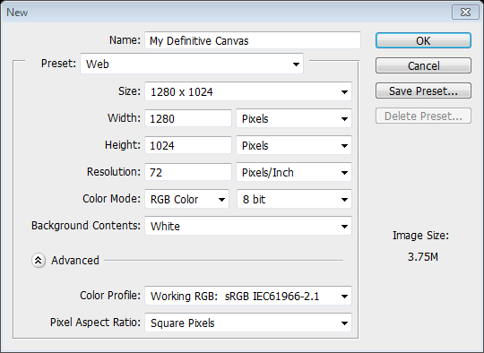

Rhys Lloyd
November 15, 2012
We have adopted print vocabulary for the web.
Natural to borrow existing terms which we're already familiar with.
Another word we've borrowed whether we're familiar with it or not:
Immediately provides a boundary for the work to come.

Imagine a painter selecting their canvas, finishing their work, and then handing their work off to someone to cut into pieces and try to glue it all back together on a canvas of a different shape and size.
Which then changes for each person who looks at it...
We define our canvas in Photoshop, immediately establishing constraints:
Eventually, the design is approved. We then immediately cut it to pieces and try to shove the design into our real canvas.
A canvas which:
Our current process is comfortable because it's what we know.
We like setting constraints and boundaries; it gives us something to work with.
The problems:
Even more users, and their individual: